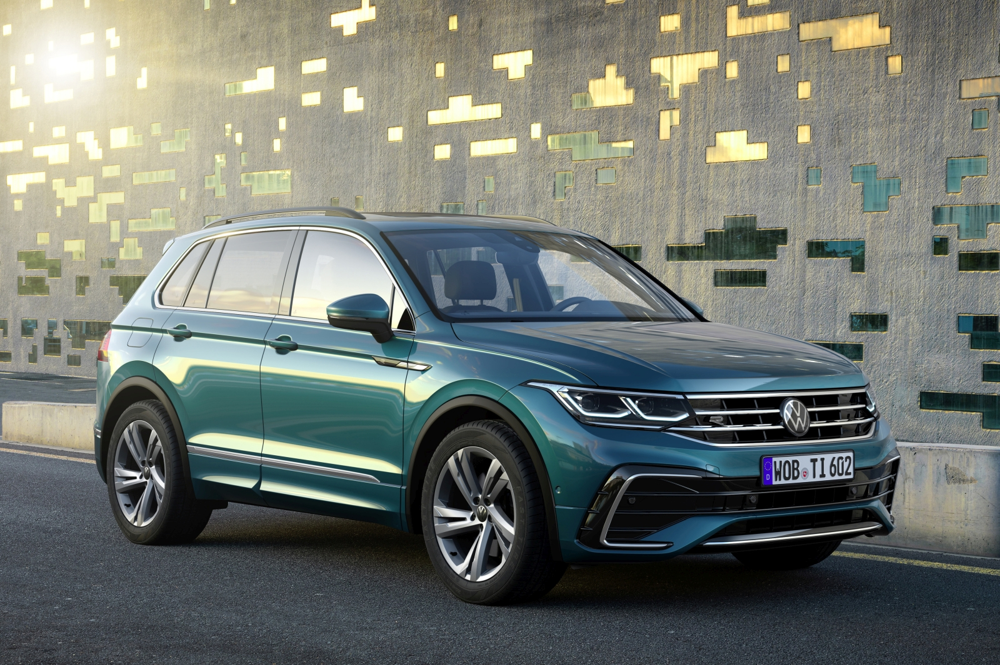

|
 |
A Tiguan elegáns és dinamikus külső megjelenésével tűnik ki. Nagy légbeömlők, keskeny hűtőrács és új kialakítású fényrajzolat emeli ki a jármű elejét. Áramvonalas vonalak és erőteljes arányok kölcsönöznek a karosszériának sportos formát. A belső tér is megújult, olyan innovatív felszereltségeket és opciókat nyújt Önnek, mint az új hangulatvilágítás, a nagyobb kijelző és az intelligens digitális nyelvi asszisztenst is magában foglaló, optimalizált kezelési koncepció. |